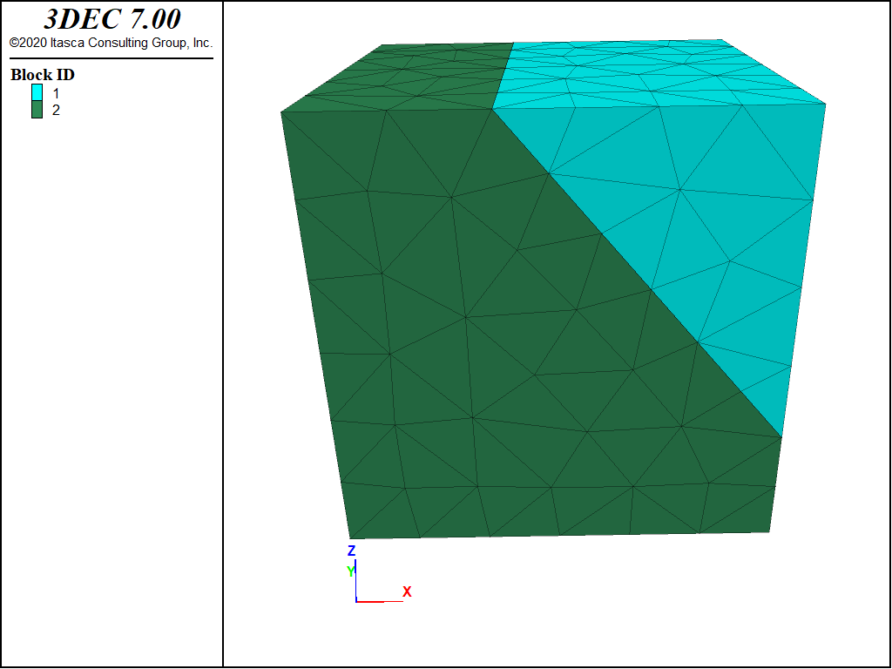

导入与合并
也可以通过从文件导入来创建网格单元。有两种方式：通过 block import 命令从网格文件导入，或以命令形式导入块体并将它们“合并”为网格单元。后续各小节介绍这两种方法。
从网格文件导入
3DEC 网格文件以 ASCII 或二进制格式描述块体几何（顶点、面〔刚性块体〕、网格单元〔可变形块体〕和块体分组）。二进制文件小于 ASCII 文件，导入加载时间也更短。ASCII 网格文件规范见 block zone import 命令说明。如果未提供文件扩展名，则使用“3dgrid”。
命令 block import filename s 导入名为 s 的文件。该命令为输入文件中指定的每个点创建一个新顶点。刚性块体由一组面定义，可变形块体由一组四面体网格单元定义。网格文件还可以包含块体和网格单元的分组信息。此外，网格文件还可包含为特定接触赋予节理组 ID 和／或接触分组名称的信息。下面给出一个 ASCII 网格文件示例及其生成模型。
下面给出一个网格文件示例。该模型定义两个已划分网格的块体，二者之间有一条节理。生成的模型见图 1（Figure 1）。
* 3DEC grid produced by 3DEC 7.00 Pre-Release 123
* Fri Jul 17 10:52:19 2020
TOL 3.60000000000000e-02
* GRIDPOINTS
G 1 -2.00000000000000e+01 -2.00000000000000e+01 -2.00000000000000e+01
G 2 1.00000000000000e+01 -2.00000000000000e+01 -2.00000000000000e+01
G 3 1.00000000000000e+01 1.00000000000000e+01 -2.00000000000000e+01
G 4 -2.00000000000000e+01 1.00000000000000e+01 -2.00000000000000e+01
G 5 -2.00000000000000e+01 -2.00000000000000e+01 1.00000000000000e+01
.
.
.
G 389 -1.19034744602300e+01 -1.60151236941150e+01 -8.75834604299203e+00
G 390 -1.60659304827419e+01 -1.64589286024737e+01 -5.21286966750346e+00
G 391 -5.96745819092070e+00 -7.25151553778668e+00 8.09379422942049e-01
* FACES
F 7 16 14 10 12
F 17 14 16 8
.
.
.
F 11 11 2 1 5 9
F 9 1 2 3 4
* ZONES
Z 1 297 296 170 168
Z 2 294 298 291 117
Z 3 166 37 149 36
Z 4 345 353 250 97
.
.
.
Z 1819 359 277 107 3
Z 1825 207 82 337 4
Z 1826 207 337 112 4
* BLOCKS
B 1 F 7 17 15 13 10 Z 259 305 307 237 275 247 440 447 132 14 460 30 70 405 400 538 ...
B 2 F 8 18 16 14 12 11 9 Z 253 620 639 638 561 549 505 810 744 629 811 242 951 949 ...
* BLOCK GROUPS
BGROUP "foot_wall" SLOT "Default"
2
BGROUP "hanging_wall" SLOT "Default"
1
* JOINT SET
JS 99 1-2
* JOINT GROUP


图 1：采用四面体网格单元划分的块体示例。
重要说明：上述示例导出自 3DEC 中创建的模型，显示由面和网格单元定义的块体。这些面表示划分网格前原始刚性块体的面，因此块体为凸体。也可以导入非凸的已划分网格块体。此时省略 * FACES 部分，也省略每个块体的面列表。在这种情况下，为使接触检测和力计算正常进行，会在每个块体外表面的各三角形面上添加一个“面块体”。添加面块体会增加内存和计算开销，但允许创建包含凹块体的模型。下一节将详细讨论。
将块体作为网格单元导入
在 3DEC 7 版之前，只能导入块体，不能导入网格单元。复杂几何通过导入四面体块体集合来创建。大多数情况下，其中大部分块体会被连接，其间接触并不是真实断层。这种方式非常低效，会占用大量内存并减慢计算。
7 版新增计算逻辑，可在导入时将四面体块体转为网格单元。如果在创建块体之前发出 block merge-start 命令，后续每条 block create tet 命令都会检查分组（槽位 槽位 sDefault（sDefault））是否与已有块体的分组一致。如果一致，就不创建新块体，而是创建新网格单元，并将其添加到已有块体中。
全部块体创建完毕后，将得到一个或多个已划分网格的块体。这些块体可以为凹体。为使接触计算正确运行，需要添加一系列“面块体”。面块体本质上是在每个外表面上创建的二维三角形块体。只有面块体参与接触计算，因此某些情况下可大幅提高程序效率。全部块体创建后，发出 block merge-finish 命令，即可添加面块体。
使用合并逻辑意味着：
- 不再需要
block zone generate命令，因为块体在创建时就已划分网格 - 不需要
block join命令 - 块体可以为凹体
- 所有导入块体都必须为四面体
- 创建后不能再切割块体
面块体可以绘图，并通过 FISH（fblock 函数）访问。导入和合并的示例，见采用面块体的露天矿（Open Pit with Faceblocks）。
| 这些内容对您有帮助吗？… 版权与免责声明 | FLAC3D © 2019, Itasca | 原文更新于 2020 年 10 月 8 日 |